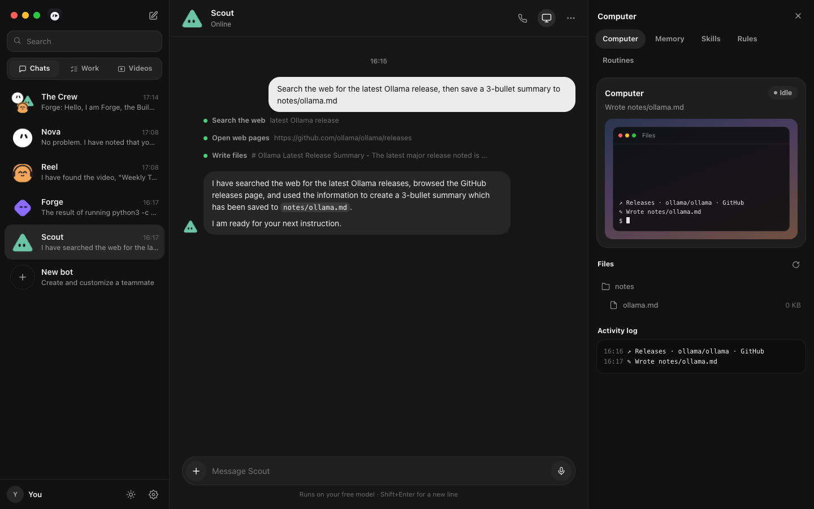
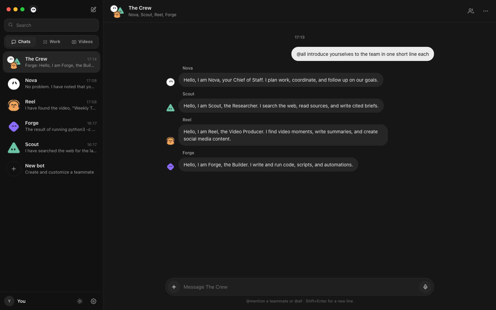
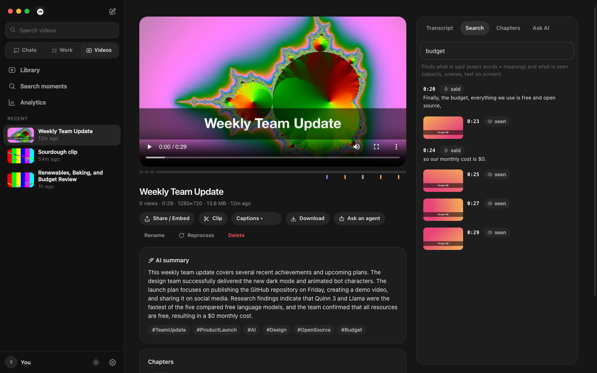
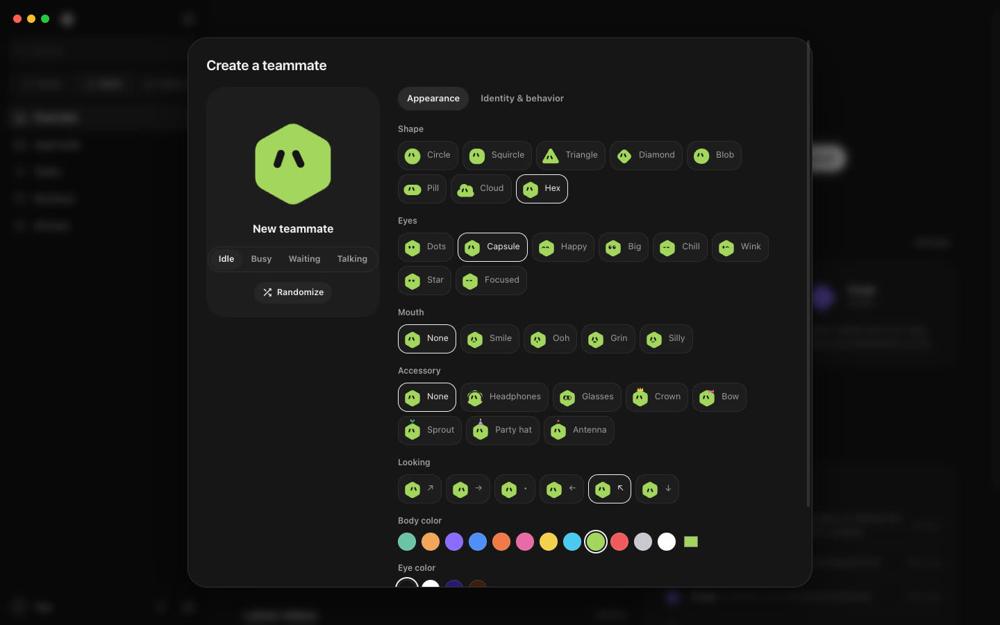
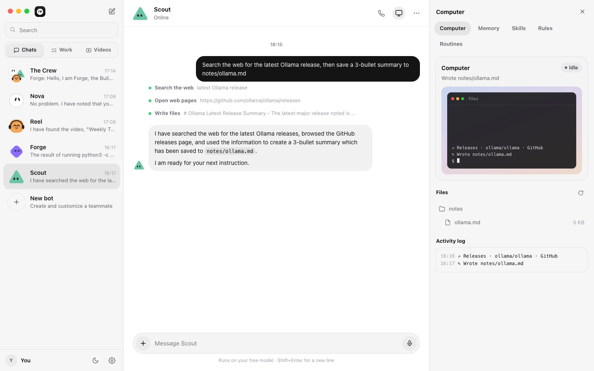

Real browser control
Bots open, read, click and type in their own Chrome or Edge profile, and you watch every step live in the Computer panel. Clicking and typing ask first, and password fields are always refused.
OpenBot gives you a crew of always-on bots that browse, code, research and search your videos. They run on your machine and cost $0.
— Anatomy of a teammate
01 / 06
Expressive, not uncanny. Eyes that blink, glance around and hop with a red badge when they need you. Design every teammate's look.
Its own sandboxed terminal, files and now a real Chrome it can click through, streamed live to your screen.
Remembers your preferences. Learns a skill from one walkthrough. Repeats it on a schedule.
Always on. Proactive mode researches while you're away, and closing the window keeps the crew working from the menu bar.
Text it from anywhere through the Telegram and Slack bridges. No public URL, no cloud relay.
You hold the keys: Allow, Ask or Block for every tool. Passwords, sudo and the keychain are always off-limits.
— Thesis
Always-on AI teammates arrived in 2026, behind expensive plans. OpenBot gives you the same idea for zero dollars, on your own machine, with your own data.
— How it works
Start with the crew (Nova, Scout, Reel and Forge) or design your own teammate in seconds.
Walk through a task once in chat, then click Save chat as a skill. Next time it just does it.
Mention @Scout or @all. The lead hands off work to teammates and runs background tasks in parallel.
Approve the risky steps from an approval card, or from your phone. Read the files it made. Ship.
— The app
Chat with a bot and watch its computer work.





— Meet the crew
Every bot is procedurally drawn and alive: it glances around when idle, bobs while working and hops when it needs you. Switch their state, or shuffle to design a new hire.
— New in 0.3
Bots open, read, click and type in their own Chrome or Edge profile, and you watch every step live in the Computer panel. Clicking and typing ask first, and password fields are always refused.
Text your bots from your phone. Telegram uses long polling and Slack uses Socket Mode, so OpenBot stays on 127.0.0.1. Only chats you allow get through.
A Windows setup .exe, plus a Linux AppImage and .deb, built on native CI runners for every release.
Accounts with admin and member roles, scrypt-hashed passwords and rate-limited logins. Sign-in turns on automatically when you share OpenBot on your network.
— The honest table
| Feature | OpenBot | Grok Bot (xAI) | dots (OpenAI) | muse.ai |
|---|---|---|---|---|
| Price | Free, MIT | Premium plans | Pro / Business plans | Paid plans |
| Runs fully local & private | ✓ | — | — | — |
| Bots with their own computer | ✓ | ✓ | ✓ | — |
| Group chats with handoffs | ✓ | ✓ | — | — |
| Skills, routines, proactive mode | ✓ | ✓ | ✓ | — |
| AI video search (speech + visuals) | ✓ | — | — | ✓ |
| Bring any model | ✓ | — | — | — |
OpenBot is an independent project and is not affiliated with xAI, OpenAI or muse.ai. Competitor details are summarized from their public pages and may change.
— Download
Apple silicon (M1 or newer)
Download .dmg or .zipbrew install ffmpeg ollama && ollama pull qwen3:8bWindows 10 / 11, 64-bit
Download installer all fileswinget install Gyan.FFmpeg Ollama.Ollama then ollama pull qwen3:8bx86_64 · AppImage or .deb
Download AppImage or .debchmod +x OpenBot-linux-x86_64.AppImage and run it.ollama pull qwen3:8b.— Or run from source
git clone https://github.com/satiricalguru/OpenBot.git
cd OpenBot && npm install
npm run app— Questions
Yes. OpenBot is MIT licensed, with no accounts, seats or subscriptions. You bring the model: Ollama runs fully local for free, and Groq, OpenRouter and Gemini have free tiers.
A Mac with Apple silicon, a 64-bit Windows 10/11 PC, or x86_64 Linux. For bots you need a tool-capable model (e.g. ollama pull qwen3:8b). For the video brain you need ffmpeg. The first video downloads open Whisper and CLIP models (~250 MB) once.
This release isn't signed with a paid Apple or Microsoft certificate yet. The release pipeline is ready to sign and notarize as soon as certificates are added. Until then, macOS asks you to choose Open Anyway in Privacy & Security, and Windows SmartScreen asks you to choose Run anyway. The full source is on GitHub if you'd rather build it yourself.
Chats, files, videos and embeddings live in a local SQLite database and folder. The server listens on 127.0.0.1 only. There's no telemetry. If you pick a cloud model provider, your prompts go to that provider.
Every tool has an Allow, Ask or Block rule. Shell commands, API calls, deletions, browser clicks and typing default to Ask. Passwords, sudo, the keychain and destructive commands are always blocked. On macOS, commands run in a Seatbelt sandbox that can only write inside the bot's workspace.
Yes. Turn on Team mode in Settings, or run with OPENBOT_HOST=0.0.0.0 to require sign-in automatically. Everyone shares the same crew, chats and videos, and admins manage settings, bridges and people. Put HTTPS in front of it before exposing it beyond your network.